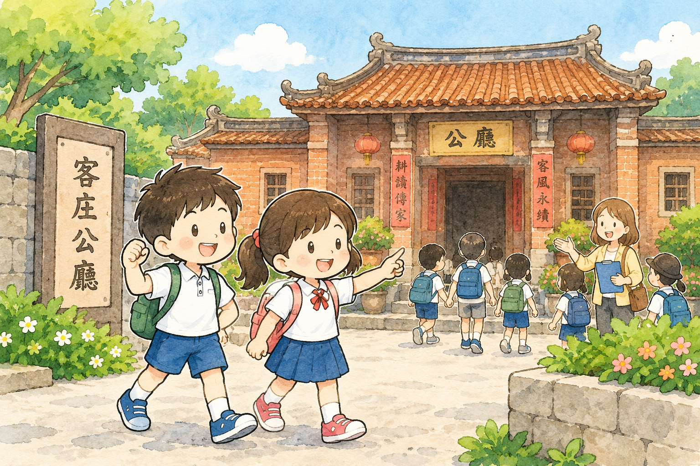

返回
口說詞彙卡
選擇腔別
四縣腔
海陸腔
大埔腔
饒平腔
詔安腔
南四縣腔
選擇主題
請先選擇腔別，再選課別開始。

學習階段1
戶外教學趣
聽音跟讀：聽示範，跟著說出客庄詞語。
學習階段2
客語互動場景
觀察場景，點選物件進行詞語互動。
單字
第
1
題 / 5
看華語選客語
白飯
請選出正確的四縣腔詞。
重選
下一題
恭喜你完成第1課「𠊎好食个東西」！
看懂食物圖片
選出生詞
認得拼音
完成第1課測驗
再玩一次
返回口說詞彙卡